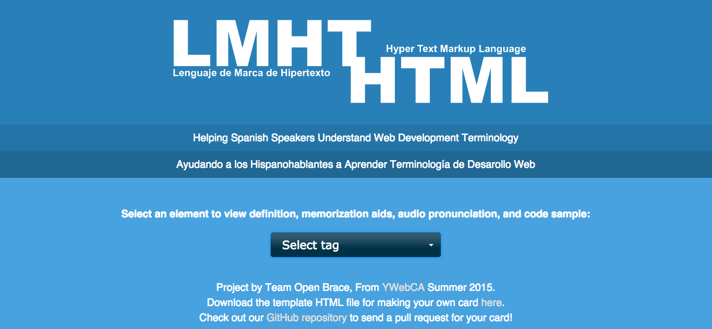

-
CSS Zen Garden
-

CSS Selectors
-

Group Project
HTML Semantics
Can you believe that our class started out learning JavaScript before HTML or CSS? Cool fact. The instructors felt it better to dive in the deep end right away and that way it would get easier as we went along. Having JavaScript knowledge first certainly made it easier to understand the importance of semantic html. We learned the basics of div's - how you have parents and children, how width and height are defaulted to auto. Here we learned what the DOM tree was, and how to read the html outline in the DOM. Similar to learning proper structure when writing a paper, the fundamentals of properly organized html are our basis for creating a dynamic website. We could see how important this is for working in a company team, where others should be able to simply take a look at your DOM outline and understand how you might want the CSS and JavaScript to be written.
CSS Zen Garden
This was a fun project where the html was already done and we simply had to practice our beginners knowledge of css selectors to design the html page.
CSS Selectors
Our CSS moved out of the rookie phase during this project. Challenging, yet rewarding, this project was probably the most fun for me. Using nth child selectors as well as some attributes, I incorporated a triple linear gradient rotated 45 degrees to attain the effect of slicing through an individual cell and creating a pyramid. VERY satisfying.
JavaScript
Take a look at those JavaScript worksheets I mentioned! You'll also see that we learned some command line essentials, as well as Markdown.
Group Project
I was elected to be group leader for our capstone project, and was very happy with the idea we all came up with: An open source site to help spanish speakers understand the English terminology behind programming tags. We created a repo on GitHub, pushing and pulling as we built. We used a Jquery UI dropdown list in combination with an Ajax call to render different html documents to the page depending on what the user selects. The website uses an audio file and an idiomatic description for each tag selected to understand. We completed a readme file with explanation on how to easily add another programming tag to our website and continue to build this helpful educational tool!